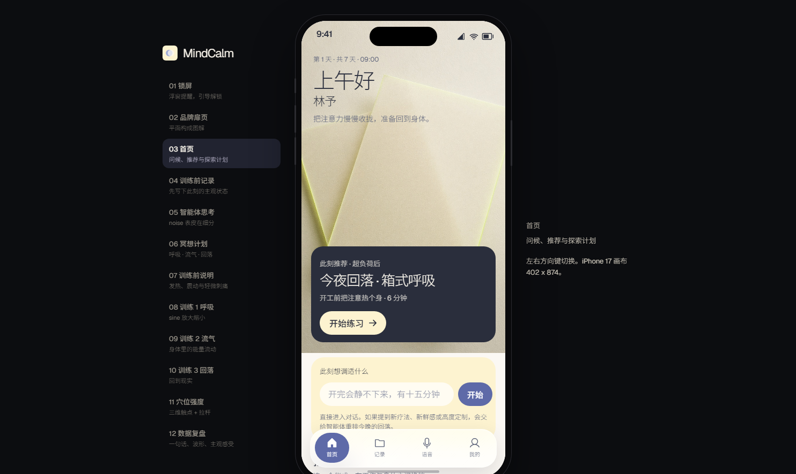
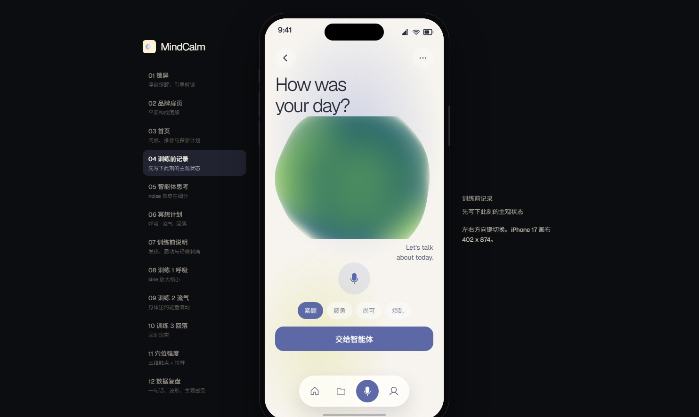
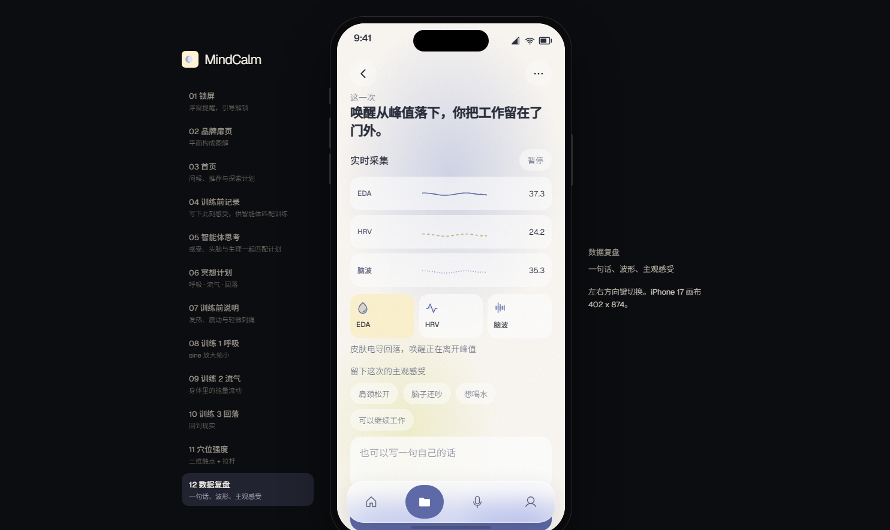
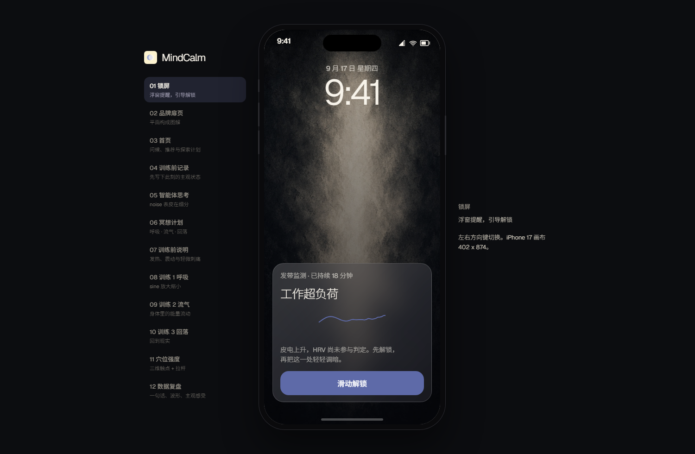
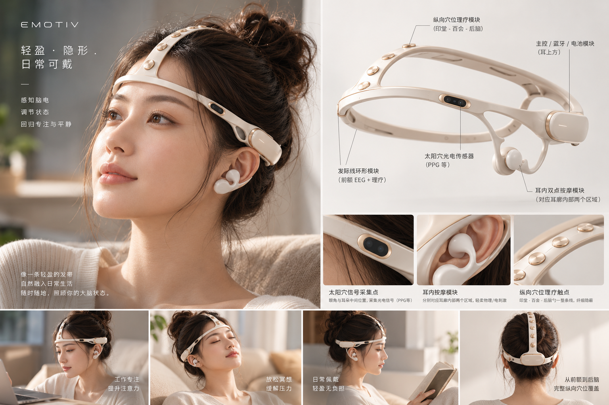
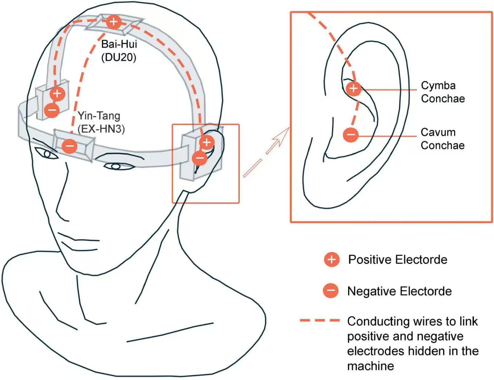
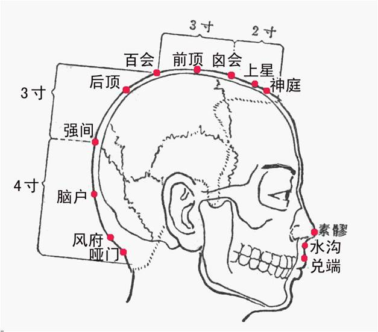

Soft Healthcare · Proposal phase
MindCalm · 软件呈现 / 原型延展
从 Attunia 的「感知 + 引导」向前一步：探索可穿戴闭环与软件呈现。本页是概念提案阶段的轻量演示，不是量产样机或临床系统。
诚实边界：图中分数 / 指数为软件编译示意，不是医疗诊断值；主动刺激（穴位 / 微电流等）需要单独的安全与有效性研究。硬件渲染与 CAD 代表方向探索，不等于已制造或已验证。
六屏软件节点（可交互）
来源：微信收到的 MindCalm-PPT六屏demo.zip（E:\脑电项目2\releases）。键盘 ← → 切换；B 总览；H 隐藏侧轨。
原型延展截屏
摘自完整原型工程 MindCalm-完整原型.zip / prototype-iphone17 的过程截屏，以及 Origin_Review 概念页。






硬件 / 穴位 / 设计证据
用户提供的电极穴位图、EMOTIV 风格生活方式板、穴位颅测图、手绘 EEG/EDA 迭代、CAD 头带。用于说明提案语境，不宣称已量产。


